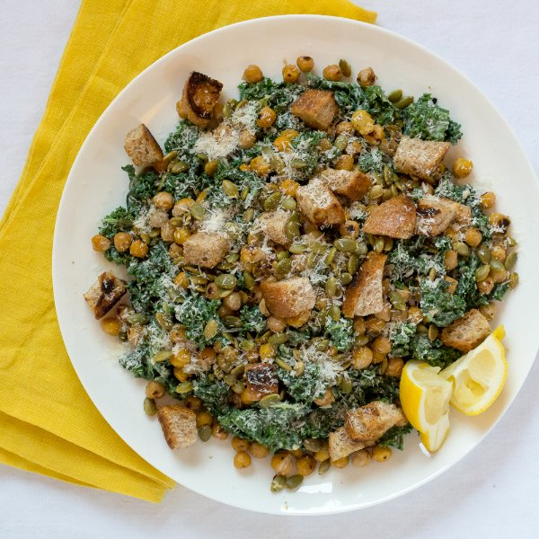

Chickpea & Kale Caesar Salad with Pumpkin Seeds

Total Time
35 min
Nutrition (Per Serving)
525.2 kcalCalories
24.9 gProtein
50.6 gCarbs
27.7 gFat
Full nutrition table
| Calories | 525.2 kcal |
| Total fat | 27.7 g |
| Saturated fat | 14.8 g |
| Trans fat | 0.2 g |
| Cholesterol | 6.4 mg |
| Sodium | 419.4 mg |
| Carbohydrates | 50.6 g |
| Fiber | 12 g |
| Sugars | 5.2 g |
| Protein | 24.9 g |
| Potassium | 749.4 mg |
| Calcium | 234.8 mg |
| Iron | 4.5 mg |
| Vitamin A | 112 IU |
| Vitamin C | 101.6 mg |
| Vitamin D | 1.4 IU |
Cookware
Ingredients
- 2 (15 oz) cansgarbanzo beans (chickpeas)
- 2 clovesgarlic
- 2 buncheskale
- 1lemon
- 1 ozParmesan cheese
- ½ cupplain Greek yogurt
- ½ cuppumpkin seeds
- 2whole grain buns or rolls
- Dijon mustard
- soy sauce
- virgin coconut oil
Steps
- Wash and dry the kale leaves and lemon.2 bunches kale
1 lemon - One kale leaf at a time, cut along the sides of the tough center ribs, then pull out and discard the ribs. When all the leaves are trimmed, chop them crosswise into 1-inch pieces and transfer to a large bowl.
- Finely grate ½ cup of Parmesan.1 oz Parmesan cheese
- Trim off and discard the root ends of the garlic; peel and mince or press the garlic.2 cloves garlic
- Cut the lemon in half; juice one half into a small bowl (that is big enough for making the dressing) and cut the other half into wedges for serving.
- Add ½ of the grated Parmesan (save the rest for garnishing), minced garlic, yogurt, Dijon, soy sauce, salt, and pepper to the bowl with the lemon juice; whisk together until smooth.½ cup plain Greek yogurt
1 tsp Dijon mustard
2 tsp soy sauce
½ tsp salt
½ tsp black pepper - Pour the dressing over the kale and toss to combine. If the kale is tough, massage it with your hands to soften it.
- Preheat a skillet over medium heat.
- While the skillet heats up, cut the buns or rolls into ¾-inch cubes.2 whole grain buns or rolls
- Once the skillet is hot, add oil and swirl to coat the bottom.2 tbsp virgin coconut oil
- Add the bread cubes to the skillet; sprinkle with salt and toss to coat in the oil, then arrange in a single layer. Toast the bread, tossing occasionally, until the bread cubes are golden brown, 4 to 5 minutes. Once done, transfer the croutons to a bowl and return the skillet to the stove.1 tsp salt
- While the bread cubes cook, drain and rinse the chickpeas, then transfer them to a clean towel (or paper towels) and pat dry.2 (15 oz) cans garbanzo beans (chickpeas)
- Once the croutons have been transferred, wipe out the skillet with a paper towel and heat over medium heat.
- Once the skillet is hot, add oil and swirl to coat the bottom.2 tbsp virgin coconut oil
- Add the chickpeas to the skillet; season with salt and pepper and toss to coat in the oil. Cook, stirring occasionally, until the chickpeas are golden brown and crispy, 5 to 7 minutes. Once done, remove the skillet from the heat.1 tsp salt
1 tsp black pepper - Measure out the pumpkin seeds and place in a small bowl.½ cup pumpkin seeds
- To serve, arrange a bed of the kale on a plate and top with the croutons, chickpeas, pumpkin seeds, and remaining Parmesan. Garnish with lemon wedges for squeezing over the top.